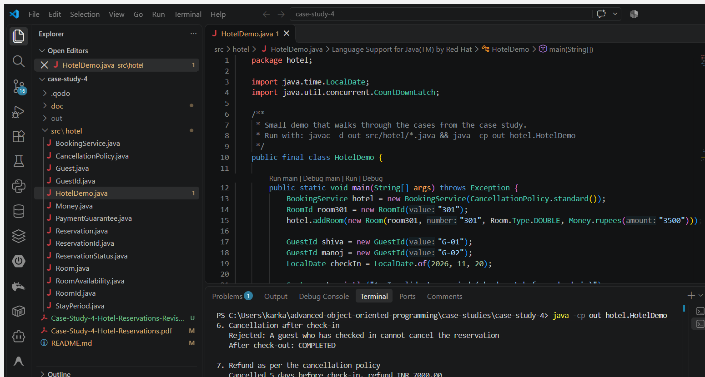
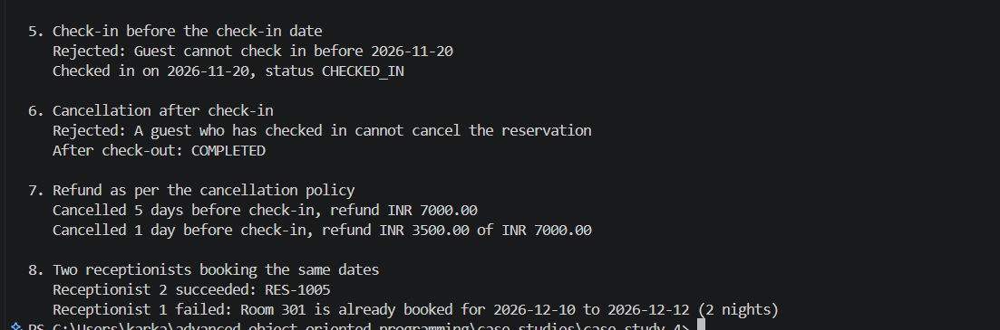
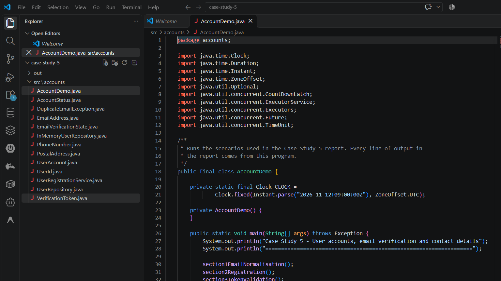
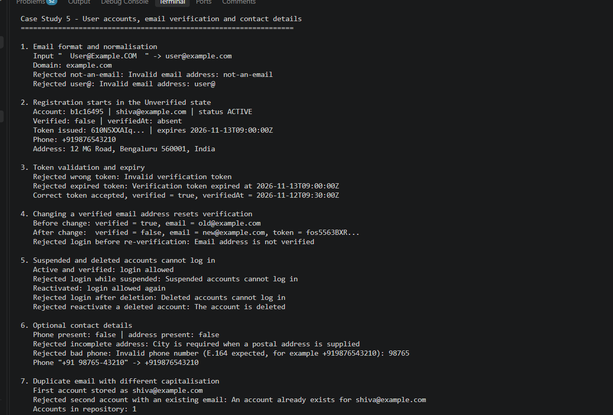
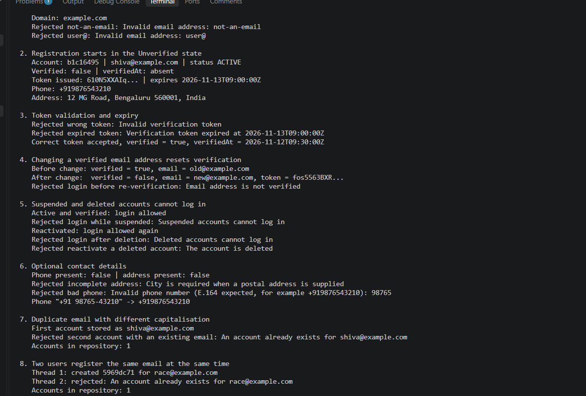

Business Invariants
For the hotel reservation system, the following invariants must always hold.
Value Objects
RoomId instead of a plain
String prevents a room id being passed to a method that expects a reservation
id.double would allow rounding errors in bills and refunds.Java Model for Stay Period
A Java record is suitable because it gives an immutable value object with a compact constructor that validates the dates.
public record StayPeriod(LocalDate checkIn, LocalDate checkOut) {
public StayPeriod {
if (checkIn == null || checkOut == null)
throw new IllegalArgumentException("Check-in and check-out dates are required");
if (!checkOut.isAfter(checkIn))
throw new IllegalArgumentException("Check-out must be after check-in");
}
public long nights() {
return ChronoUnit.DAYS.between(checkIn, checkOut);
}
public boolean overlaps(StayPeriod other) {
return checkIn.isBefore(other.checkOut) && other.checkIn.isBefore(checkOut);
}
}
Preventing Invalid Date Ranges
The record validates the two dates in its constructor, so an invalid range cannot exist. Any
attempt to create a stay with a check-out date before or equal to the check-in date throws an
IllegalArgumentException. Once the object is created, the dates cannot be changed
because the fields are final.
The range is treated as half open, [checkIn, checkOut). The check-out date is not
part of the stay, because the guest leaves that morning and the room can be given to the next
guest on the same day. With this rule, the overlap check is a simple comparison. A stay that ends
on 10 October and another that starts on 10 October do not overlap, which allows back-to-back
bookings.
Room availability is checked by the room that owns the schedule. The Room entity
(or a RoomAvailability aggregate) keeps the list of stays for that room and rejects a
new StayPeriod if it overlaps any existing one.
Classification
Model Description
ReservationId, a
StayPeriod, a GuestId, a RoomId, a total
Money, an optional PaymentGuarantee and a
ReservationStatus.RoomId, its number, type, tariff and the schedule of
stays that belong to it.CancellationPolicy
instead of keeping the refund rules inside the entity.Consistency Boundary for Room Availability
The Room (or a dedicated RoomAvailability) should be the consistency
boundary for the rule "no overlapping bookings for one room". This rule needs all reservations for
that room, so checking it from a single reservation would require a query across many reservation
objects. By making the room hold its own schedule, the booking operation can lock one room, check
the new date range against its list and save the change in one transaction.
Permitted Transitions
Prohibited Transitions
Information Required for Confirmation
A valid PaymentGuarantee, the guaranteed amount and an authorization reference are
required before the status can become Confirmed.
Preventing Cancellation after Check-in
The cancel() method checks the current status first. If the reservation is
Checked In or Completed, it throws an IllegalStateException and no
refund is calculated.
Making Invalid States Unrepresentable
The implementation uses an enum ReservationStatus together with a single
transition table and guarded methods. There are no public setters, so the status can change only
through confirm(), checkIn(), checkOut() and
cancel(). Each method checks the current state before changing it. The same idea can
be implemented with sealed state classes, where a CheckedIn object simply does not
have a cancel() method. Both designs remove the possibility of an invalid transition
from outside the entity.
1. The Concurrency Problem
If two receptionists book the same room at the same time, both transactions can read that the room is free and both can insert a reservation. This is a check-then-act race condition. Both bookings succeed and the room is double booked.
2. Application Protection
Optimistic concurrency control can be used with a version field on the room availability aggregate. When the first transaction saves, the version increases. The second transaction tries to save the old version, fails with an optimistic lock exception and asks the receptionist to choose another room. A short transaction and a retry for transient failures complete the application-level protection.
3. Refund Calculation
The refund is calculated by the CancellationPolicy value object. It receives the
total amount, the stay period and the cancellation date. If the cancellation date is on or after
the check-in date, the refund is zero. Otherwise the policy applies its percentage, for example a
full refund when cancelled more than 48 hours before check-in and a partial refund after that. The
result is never allowed to exceed the amount paid.
4. Persistence Level Safeguards
CHECK (check_out > check_in) protects the date
range even when a script bypasses the application.EXCLUDE USING gist (room_id WITH =, stay_range WITH &&).SERIALIZABLE or
REPEATABLE READ isolation so that the availability check cannot see stale
data.The program was compiled and run in the VS Code integrated terminal. The screenshots below show the project, the source file and the actual output of the demo.


Business Invariants
verified = true with a null
timestamp, which no audit can accept.Unverified(email, token) or Verified(email, verifiedAt) and is
replaced as a whole on every transition.Problems with Primitive Types and Boolean Flags
If the account is modelled with fields such as emailVerified,
verifiedAt, verificationToken, tokenExpiry and nullable
address columns, the compiler accepts every combination, including the combinations the business
can never explain.
emailVerified = true, verifiedAt = null and a pending
verificationToken at the same time.emailVerified = false but verifiedAt already has a date, so the
login check does not know which field to trust.street = "12 MG Road" with a null city and postal code, which cannot produce a
delivery label.status = "SUSPENDED" while the login service checks only the password.Improved Object-Oriented Design
EmailAddress,
PhoneNumber, PostalAddress, VerificationToken and
UserId validate themselves in their constructors.Optional<PhoneNumber>
and Optional<PostalAddress>. The value objects themselves are never
partial.verifyEmail(), changeEmail(), suspend(),
reactivate() and delete().public sealed interface EmailVerificationState
permits EmailVerificationState.Unverified,
EmailVerificationState.Verified {
record Unverified(EmailAddress email, VerificationToken token)
implements EmailVerificationState { }
record Verified(EmailAddress email, Instant verifiedAt)
implements EmailVerificationState { }
}
Workflow and Design
EmailAddress, which trims,
lower-cases and validates it. The registration service then checks uniqueness and creates
the account with a new UserId in the active state. The verification state is
Unverified(email, token). Phone and address are stored as empty or present
optionals.assertCanLogin(). That
method throws for suspended and deleted accounts and for unverified emails. Deletion is
final, so a deleted account cannot be reactivated.1. Is Email Uniqueness an Invariant of an Individual User Object?
No. An invariant of one object can be checked using only the data inside that object. The rule
"this email is unique" needs every other account in the system, so it is a rule about the set of
accounts, not about one user. Putting an isEmailUnique() method on
UserAccount would require a repository inside the entity or would return an answer
that is already out of date.
2. Enforcing Email Uniqueness
It is enforced by a domain service, UserRegistrationService. The service normalises
the email, asks the repository whether the address already exists and creates the account only if
the check passes. The check and the insert run in one transaction.
3. Simultaneous Registration
If two users register the same email at the same time, both threads can see that the address
does not exist and both can try to insert. This is the same check-then-act race as the hotel
booking. Without a database constraint, both rows are saved and the system has two accounts for one
identity. A synchronized block in one server is not enough because another server has
a separate JVM.
4. Additional Database Protection
The database must have a unique index on the normalised email, for example
CREATE UNIQUE INDEX user_email_unique ON user_account (lower(email)). The first
transaction succeeds and the second fails with a constraint violation, which the application
catches and converts into the message "an account already exists". This protects the rule even
when a script or another service bypasses the application.
5. Design Evaluation: Strongly Typed Verification Model
Verified object cannot exist without a
verification timestamp and cannot carry a token. An Unverified object cannot
claim to be verified. Many defensive checks and runtime bugs disappear.The account demo was compiled and run in VS Code. The screenshots show the editor and the output of the scenarios described above.


